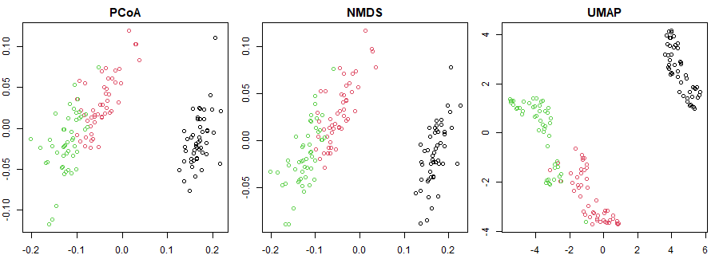

ecodive is an R package for ecological diversity analysis, from a count table to figures and p-values: alpha and beta diversity, ordination, and permutation tests, all in parallelized and memory-efficient C. It is designed to handle large datasets, such as those common in microbiome research.
Why ecodive?
Analyzing ecological diversity is often a computational bottleneck, especially with large datasets. ecodive addresses this by providing:
High Performance:
ecodiveis written in C and parallelized using pthreads, making it dramatically faster than other R packages. Benchmarks show it can be up to 14,000x faster and use up to 200,000x less memory.Zero Dependencies: The package has no external R dependencies, making it lightweight, stable, and easy to install. This also makes it an ideal and secure backend for other R packages.
Comprehensive Metrics: It implements 25 alpha and 55 beta diversity metrics, including classic and phylogenetic-aware methods like Faith’s PD, the complete UniFrac family and the compositional PhILR distance.
Ordination and Statistics: Ten ordination methods (PCoA, NMDS, UMAP, t-SNE, db-RDA, robust Aitchison PCA, and more), biplots, and five permutation tests (PERMANOVA, PERMDISP, ANOSIM, MRPP, and Mantel), so a whole analysis needs no other package.
Trusted Results: Every method is tested against the established package it replaces, such as
vegan,ape,scikit-bio,scikit-learn,uwot, andgemelli. Results are identical for any number of threads, and random methods take aseed.Ease of Use: The API is simple and integrates seamlessly with popular bioinformatics packages like
phyloseqandrbiom.
What’s Included
Each wrapper runs its functions by name, such as beta_div(counts, 'bray') or dist_ord(dm, 'nmds').
Installation
The latest stable version can be installed from CRAN.
install.packages('ecodive')The development version is available on GitHub.
install.packages('pak')
pak::pak('cmmr/ecodive')Usage
ecodive functions are straightforward to use. Here are a few examples.
With phyloseq or rbiom objects
The easiest way to use ecodive is with a phyloseq, rbiom, or TreeSummarizedExperiment object. These objects conveniently bundle the count data and phylogenetic tree.
library(ecodive)
data(esophagus, package = 'phyloseq')
hmp50 <- rbiom::hmp50
# Calculate weighted UniFrac distance
w_unifrac <- weighted_unifrac(esophagus)
w_unifrac
#> # A dist: 3 samples (lower triangle)
#> # Weighted UniFrac
#> B C
#> C 0.105
#> D 0.14 0.142
#> # Attributes: method
# Calculate Faith's Phylogenetic Diversity
faith_pd <- faith(hmp50)
faith_pd[1:4]
#> HMP01 HMP02 HMP03 HMP04
#> 6.22296 8.59432 8.93375 9.86597With basic R objects
You can also provide the count data and phylogenetic tree as separate objects.
The ex_counts and ex_tree objects are included with ecodive.
## Example Data ----------------------
counts <- rarefy(ex_counts)
counts[,1:4]
#> Streptococcus Bacteroides Corynebacterium Haemophilus
#> Saliva 162 2 0 180
#> Gums 309 2 0 34
#> Nose 6 0 171 0
#> Stool 1 341 1 1
## Alpha Diversity -------------------
shannon(counts)
#> Saliva Gums Nose Stool
#> 0.74119910 0.35692121 1.10615349 0.07927797
faith(counts, tree = ex_tree)
#> Saliva Gums Nose Stool
#> 180 155 101 202
## Beta Diversity --------------------
bray(counts)
#> # A dist: 4 samples (lower triangle)
#> # Bray-Curtis Dissimilarity
#> Saliva Gums Nose
#> Gums 0.426
#> Nose 0.98 0.983
#> Stool 0.988 0.988 0.991
#> # Attributes: method
weighted_unifrac(counts, tree = ex_tree)
#> # A dist: 4 samples (lower triangle)
#> # Weighted UniFrac
#> Saliva Gums Nose
#> Gums 37
#> Nose 67.2 56
#> Stool 110 109 110
#> # Attributes: methodOrdination
Ordinations place samples on a few axes for plotting. Most start from beta diversity distances; pca(), rpca(), rda(), cca(), ca(), lda(), plsda() and oplsda() start from the counts. With only four samples, ex_counts is too small to ordinate, so these examples use R’s built-in iris data: 150 flowers from three species.
dm <- bray(iris[, 1:4])
ord <- pcoa(dm)
ord
#> # A matrix: 150 samples × 3 axes
#> # Principal Coordinates Analysis of Bray-Curtis Dissimilarity
#> # % of variance: 89.0, 9.3, 2.9
#> PCoA1 PCoA2 PCoA3
#> 1 0.169 -0.0259 -0.00505
#> 2 0.171 0.0235 0.0308
#> 3 0.187 -0.0032 0.0322
#> 4 0.18 0.0113 0.0372
#> 5 0.176 -0.03 -0.00613
#> 6 0.136 -0.0398 -0.0431
#> 7 0.186 -0.0182 0.0156
#> 8 0.167 -0.0165 0.00287
#> 9 0.194 0.0406 0.0413
#> 10 0.171 0.011 0.0286
#> # … 140 more samples
#> # Use print(x, n = ...) to see more samples
#> # Attributes: method, eig, prop, trace, correction, constant
# Any method by name, coloured by a column of metadata.
plot(dist_ord(dm, 'pcoa'), 'Species', iris)
plot(dist_ord(dm, 'nmds'), 'Species', iris)
plot(dist_ord(dm, 'umap'), 'Species', iris)
Statistical Tests
Permutation tests ask whether a variable, such as species or treatment, explains the distances between samples.
permanova(dm, 'Species', iris)
#> Permutational multivariate analysis of variance (PERMANOVA) of Bray-Curtis Dissimilarity
#>
#> F = 532.7, p = 0.001, z = 577.6
#> Permutations: 999 (free)
#>
#> Model R2 = 0.8788. Model tested as a whole:
#>
#> Df SumOfSqs R2 F Pr(>F)
#> Model 2 2.3173 0.8788 532.7 0.001 ***
#> Residual 147 0.3197 0.1212
#> Total 149 2.6370 1.0000
#> ---
#> Signif. codes: 0 '***' 0.001 '**' 0.01 '*' 0.05 '.' 0.1 ' ' 1
# Any test by name.
dist_test(dm, 'anosim', 'Species', iris)
#> Analysis of similarities (ANOSIM) of Bray-Curtis Dissimilarity
#>
#> R = 0.8576, p = 0.001, z = 79.4
#> Permutations: 999 (free)
#>
#> Mean rank of the distances, between and within groups:
#> pairs mean_rank
#> Between 7500 7163.90
#> setosa 1225 2239.66
#> versicolor 1225 2457.85
#> virginica 1225 2418.15Available Methods
Use list_metrics() to browse the metrics available for calculating diversity, list_dist_ords() for ordination methods, and list_dist_tests() for statistical tests.
# Alpha Diversity
list_metrics('alpha', 'id')
#> [1] "ace" "berger" "brillouin"
#> [4] "chao1" "faith" "fisher"
#> [7] "gini" "simpson" "goods_coverage"
#> [10] "heip" "hill" "inv_simpson"
#> [13] "margalef" "mcintosh" "mcintosh_evenness"
#> [16] "menhinick" "observed" "pielou"
#> [19] "renyi" "shannon" "dominance"
#> [22] "simpson_evenness" "squares" "strong"
#> [25] "tsallis"
# Beta Diversity
list_metrics('beta', 'id')
#> [1] "aitchison" "alt_gower"
#> [3] "bhattacharyya" "binomial_deviance"
#> [5] "bray_gradient" "bray_balanced"
#> [7] "bray" "canberra"
#> [9] "cao" "chao_jaccard"
#> [11] "chebyshev" "chisq_distance"
#> [13] "chord" "clark"
#> [15] "sorensen" "divergence"
#> [17] "euclidean" "generalized_unifrac"
#> [19] "gower" "hamming"
#> [21] "hellinger" "horn"
#> [23] "jaccard" "jaccard_nestedness"
#> [25] "jaccard_turnover" "jensen"
#> [27] "jsd" "kulczynski"
#> [29] "lorentzian" "mahalanobis_distance"
#> [31] "manhattan" "matusita"
#> [33] "minkowski" "morisita"
#> [35] "motyka" "mountford"
#> [37] "normalized_unifrac" "ochiai"
#> [39] "philr_distance" "psym_chisq"
#> [41] "raup_crick" "robust_aitchison"
#> [43] "soergel_gradient" "soergel_balanced"
#> [45] "sorensen_turnover" "soergel"
#> [47] "sorensen_nestedness" "squared_chisq"
#> [49] "squared_chord" "squared_euclidean"
#> [51] "topsoe" "unweighted_unifrac"
#> [53] "variance_adjusted_unifrac" "wave_hedges"
#> [55] "weighted_unifrac"
# Ordination methods that take distances
list_dist_ords('id')
#> [1] "capda" "capscale" "dbrda" "isomap" "mds" "nmds" "pcoa"
#> [8] "tsne" "umap"
# Statistical tests
list_dist_tests('id')
#> [1] "anosim" "mantel" "mantel_partial" "mrpp"
#> [5] "permanova" "permdisp"Documentation
The online manual for ecodive is available at https://cmmr.github.io/ecodive/. It includes reference pages for each function and these guides, which are also available offline with vignette():
Community guidelines
Support
Bug reports, feature requests, and general questions can be submitted at https://github.com/cmmr/ecodive/issues.
Contributing
Pull requests are welcome. Please ensure contributed code is covered by tests and documentation (add additional tests and documentation as needed) and passes all automated tests.
New functions must leverage C and pthreads to minimize memory and CPU time.
Please note that the ecodive project is released with a Contributor Code of Conduct. By contributing to this project, you agree to abide by its terms.
Citation
If you use ecodive in your research, please cite our paper:
Smith et al., (2026). ecodive: Parallel and Memory-Efficient R Package for Ecological Diversity Analysis. Journal of Open Source Software, 11(121), 9777, https://doi.org/10.21105/joss.09777
License
ecodive is licensed under the MIT License © 2026 ecodive authors.
This package also contains third-party code:
- PCG Random Number Generation for C: Licensed under the Apache License, Version 2.0.
- scikit-learn (SMACOF for MDS and NMDS, t-SNE, and Isomap): Licensed under the BSD 3-Clause License.
- scikit-bio (PCoA biplot scores): Licensed under the BSD 3-Clause License.
- gemelli (robust Aitchison PCA): Licensed under the BSD 3-Clause License.
- uwot (UMAP): Licensed under the BSD 2-Clause License.
Detailed copyright and licensing information for all components can be found in the inst/COPYRIGHTS file.